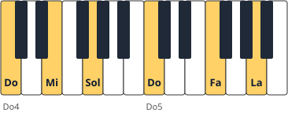
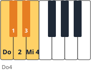
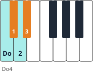

Módulo 4: Arpegios, acordes e inversiones
Los acordes, desplegados o en bloque, son el esqueleto de casi toda la música.
Un acorde se forma tocando una nota sí y otra no: Do-(Re)-Mi-(Fa)-Sol. Si la nota del medio baja un semitono, el acorde pasa de mayor a menor.
De la escala al acorde
Un acorde tríada se forma apilando terceras: fundamental, tercera y quinta. Según la tercera sea mayor o menor obtienes un acorde mayor o menor.
| Tipo | Intervalos desde la fundamental | Ejemplo en Do | Cifrado |
|---|---|---|---|
| Mayor | 3.ª mayor + 5.ª justa | Do–Mi–Sol | C |
| Menor | 3.ª menor + 5.ª justa | Do–Mi♭–Sol | Cm |
| Disminuido | 3.ª menor + 5.ª disminuida | Do–Mi♭–Sol♭ | Cdim / C° |
| Aumentado | 3.ª mayor + 5.ª aumentada | Do–Mi–Sol♯ | Caug / C+ |
1. Inversiones
Si la nota más grave no es la fundamental, el acorde está invertido. Las inversiones permiten enlazar acordes moviendo poco las manos.

🎼 Acorde de Do mayor y sus inversiones
Digitación de la mano derecha bajo cada acorde. En la 1.ª inversión se usa 1-2-5 porque la 4.ª queda arriba.
2. Arpegios
- 🌊 Digitación de Do mayor (M.D., dos octavas): 1-2-3-1-2-3-5; (M.I.): 5-4-2-1-4-2-1.
- 🌊 La muñeca y el antebrazo acompañan lateralmente: el pulgar no «se estira» por debajo.
- 🌊 Practica primero el arpegio en bloque (acorde plaqué) para que la mano aprenda la forma.
🎼 Arpegio de Do mayor · 2 octavas, manos juntas
Mantén la muñeca a la altura del teclado y desplaza el brazo lateralmente: el pulgar solo «guía», no se retuerce.
Mayor o menor: cuenta los semitonos
La diferencia está en la nota del medio (la tercera). Desde la fundamental cuenta las teclas, blancas y negras: si hay 4 semitonos es una 3.ª mayor (acorde alegre, mayor); si hay 3, es una 3.ª menor (acorde más triste, menor).


Las inversiones, como una rueda
Invertir un acorde es «hacerlo rodar»: la nota de abajo sube una octava y se coloca arriba. Do–Mi–Sol → Mi–Sol–Do → Sol–Do–Mi. Las notas son las mismas; cambia cuál queda en el bajo. Para reconocer un acorde invertido, reordénalo mentalmente en terceras («una sí, una no»): la nota de abajo de esa torre es la fundamental.
| Tonalidad de Do mayor: acordes de cada grado | Notas | Tipo |
|---|---|---|
| I | Do–Mi–Sol | Mayor |
| ii | Re–Fa–La | Menor |
| iii | Mi–Sol–Si | Menor |
| IV | Fa–La–Do | Mayor |
| V | Sol–Si–Re | Mayor |
| vi | La–Do–Mi | Menor |
| vii° | Si–Re–Fa | Disminuido |
🗓️ Ejercicio diario de acordes (8 minutos)
- Toca los siete acordes de Do mayor de la tabla, subiendo, con la mano derecha en bloque (1-3-5).
- Repite cada acorde en sus tres posiciones: fundamental, 1.ª y 2.ª inversión.💡 Cómo se hace: toca el acorde (Do–Mi–Sol), luego sube la nota de abajo una octava (Mi–Sol–Do) y repite (Sol–Do–Mi). Digitación de la derecha: 1-3-5 en la fundamental y 1-2-5 en las inversiones. Mira el teclado: la mano se desplaza sin girar la muñeca.
- Toca la fundamental con la mano izquierda y el acorde con la derecha.
- Haz lo mismo en Sol mayor y en Fa mayor (recuerda Fa♯ y Si♭).
- Arpegia cada acorde despacio, con el brazo acompañando a la mano.💡 Cómo se hace: toca las notas del acorde una tras otra (Do, Mi, Sol, Do…). Antes de que el pulgar tenga que estirarse, deja que el codo y el antebrazo se desplacen hacia la siguiente posición: la mano «viaja» con el brazo, no se abre como un abanico.
⚠️ Errores frecuentes y cómo corregirlos
| Lo que pasa | Por qué | Cómo corregirlo |
|---|---|---|
| El arpegio suena «a saltos» | El pulgar se estira y la muñeca baja | Deja que el antebrazo se desplace y mantén la muñeca a la altura de las teclas |
| Confundo mayor y menor | Miro solo las teclas blancas | Cuenta los semitonos de la 3.ª: 4 = mayor, 3 = menor |
| No reconozco un acorde invertido | Busco la fundamental en el bajo | Reordena las notas en terceras: la de abajo de la torre es la fundamental |
Armonizar la escala: un acorde sobre cada nota
«Armonizar» es construir un acorde sobre cada grado de la escala, usando solo las notas de la escala. Se apilan terceras: se toma una nota, se salta una y se toma la siguiente, y así dos veces. El resultado depende de dónde caigan los semitonos:
🎼 Los siete acordes de Do mayor
Tres mayores (I, IV, V), tres menores (ii, iii, vi) y un disminuido (vii°): el mismo reparto en todas las tonalidades mayores.
| Grado | Notas | Distancias | Tipo | Número romano |
|---|---|---|---|---|
| I | Do–Mi–Sol | 3.ª mayor + 3.ª menor | Mayor | I |
| II | Re–Fa–La | 3.ª menor + 3.ª mayor | Menor | ii |
| III | Mi–Sol–Si | 3.ª menor + 3.ª mayor | Menor | iii |
| IV | Fa–La–Do | 3.ª mayor + 3.ª menor | Mayor | IV |
| V | Sol–Si–Re | 3.ª mayor + 3.ª menor | Mayor | V |
| VI | La–Do–Mi | 3.ª menor + 3.ª mayor | Menor | vi |
| VII | Si–Re–Fa | 3.ª menor + 3.ª menor | Disminuido | vii° |
Armonizar cualquier tonalidad en 3 pasos
- Escribe la escala de la tonalidad con sus alteraciones.💡 Cómo se hace: por ejemplo, Sol mayor: Sol–La–Si–Do–Re–Mi–Fa♯–Sol.
- Apila terceras sobre cada nota usando solo notas de la escala.💡 Cómo se hace: sobre Sol: Sol–Si–Re. Sobre La: La–Do–Mi. Sobre Fa♯: Fa♯–La–Do (¡el Do natural!, porque en la escala de Sol mayor Do es natural).
- Pon a cada acorde su tipo según la regla (I, IV, V mayores; ii, iii, vi menores; vii° disminuido).💡 Cómo se hace: en Sol mayor: Sol, La m, Si m, Do, Re, Mi m, Fa♯°. Si el resultado no coincide, revisa una alteración.
Acordes «suspendidos» (sus) y acordes con otro bajo
| Cifrado | Notas en Do | Cómo se forma | Cómo suena |
|---|---|---|---|
| Csus2 | Do–Re–Sol | Se sustituye la 3.ª por la 2.ª | Abierto, sin decidir mayor o menor |
| Csus4 | Do–Fa–Sol | Se sustituye la 3.ª por la 4.ª | En suspenso: pide volver al acorde mayor |
| C/E | Mi en el bajo; Do–Mi–Sol | El mismo acorde con otra nota en el bajo (1.ª inversión) | Igual de claro pero con un bajo que camina |
| C/G | Sol en el bajo; Do–Mi–Sol | 2.ª inversión | Estable pero inquieto |
🎼 Acordes sus y acordes con otro bajo
En sus2 y sus4 la tercera se sustituye por la 2.ª o la 4.ª: el acorde queda «en suspenso». En C/E o C/G solo cambia la nota del bajo.
La barra del cifrado (C/E) indica solo la nota del bajo: lo que va a la izquierda de la barra es el acorde, y lo que va a la derecha, la nota que toca la mano izquierda. Los bajos suaves por grados (Do, Do/Mi, Fa…) hacen que las progresiones suenen más «cantables».
Posición cerrada y posición abierta
- 🧱 Cerrada: las tres notas están juntas, dentro de una octava (Do–Mi–Sol). Es la que usas en la mano derecha.
- 🧱 Abierta: las notas están más separadas (Do–Sol–Mi'), con una más de una octava. Suena más amplia, como en el acompañamiento romántico.
- 🧱 Plaqué o arpegiado: las notas del acorde suenan a la vez (plaqué) o una tras otra (arpegio): son el mismo acorde, vestido de otra manera.
🧩 En una tonalidad mayor, ¿qué tipo de acorde es el del 6.º grado (vi)?
🧩 ¿Qué notas forman Csus4?
🧩 En el cifrado C/E, ¿qué indica la «E»?
⚠️ Errores frecuentes y cómo corregirlos
| Lo que pasa | Por qué | Cómo corregirlo |
|---|---|---|
| Me sale Fa mayor en lugar de Fa♯ disminuido | Olvido que el vii° tiene un Fa♯ en Sol mayor | Apila terceras siempre dentro de la armadura de la tonalidad |
| Confundo sus2 con el acorde menor | Los dos «ceden» algo de la 3.ª mayor | En sus no hay 3.ª: es 2.ª o 4.ª y la 5.ª; el menor lleva 3.ª menor |
| La barra del cifrado me confunde | Pienso en una división matemática | Piensa «acorde sobre bajo»: C/E = Do sobre Mi |
🧩 ¿Qué notas forman la 1.ª inversión de Do mayor?
🧩 ¿Qué tipo de acorde es Re–Fa–La?
🎹 Inversiones en todas las tonalidades
Toca la tríada de cada tonalidad del círculo de quintas en estado fundamental, 1.ª y 2.ª inversión, subiendo y bajando. Anota las que te cuesten.